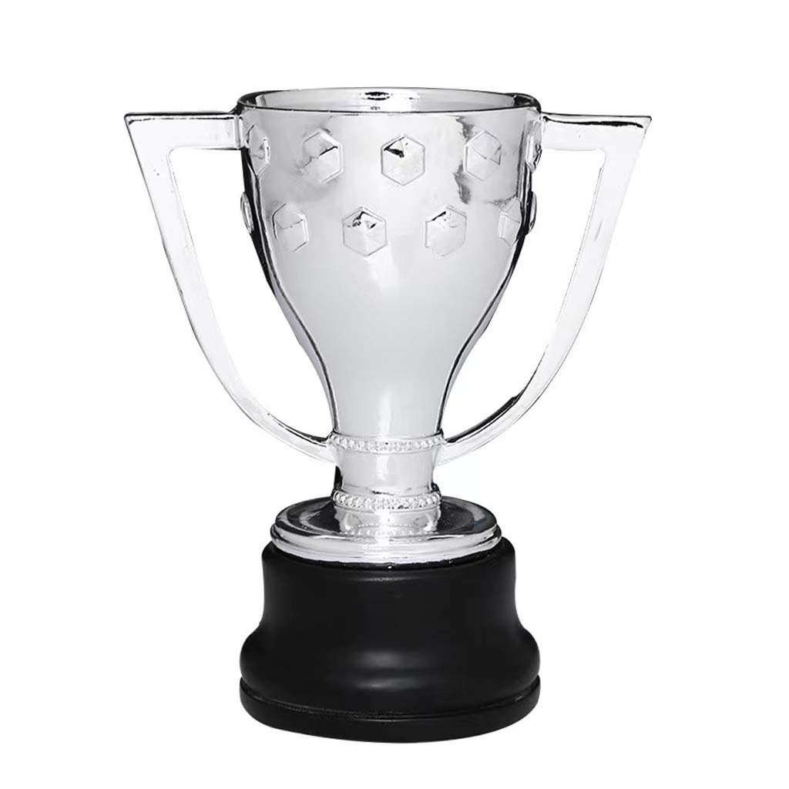
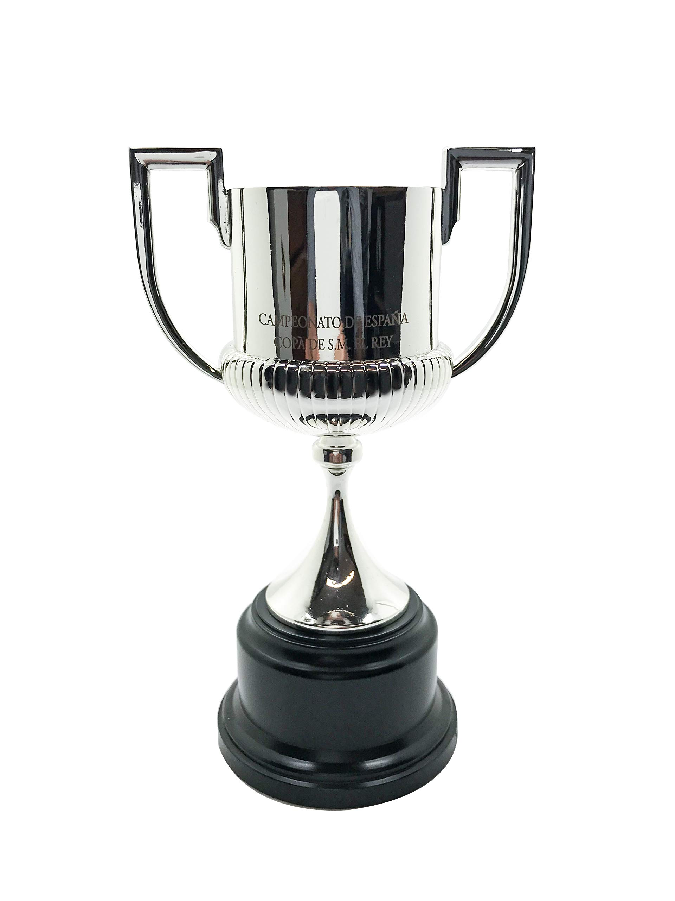
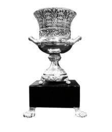

.svg.png)

Spanish League Championship - 271928-29, 1944-45, 1947-48, 1948-49, 1951-52, 1952-53, 1958-59, 1959-60, 1973-74, 1984-85, 1990-91, 1991-92, 1992-93, 1993-94, 1997-98, 1998-99, 2004-05, 2005-06, 2008-09, 2009-10, 2010-11, 2012-13, 2014-15, 2015-16, 2017-18, 2018-19, 2022-23

Copa del Rey - 311909-10, 1911-12, 1912-13, 1919-20, 1921-22, 1924-25, 1925-26, 1927-28, 1941-42, 1950-51, 1951-52, 1952-53, 1956-57, 1958-59, 1962-63, 1967-68, 1970-71, 1977-78, 1980-81, 1982-83, 1987-88, 1989-90, 1996-97, 1997-98, 2008-09, 2011-12, 2014-15, 2015-16, 2016-17, 2017-18, 2020-21

Spanish Super Cup - 151983-84, 1991-92, 1992-93, 1994-95, 1996-97, 2005-06, 2006-07, 2009-10, 2010-11, 2011-12, 2013-14, 2016-17, 2018-19, 2022-23, 2024-25